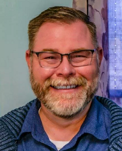
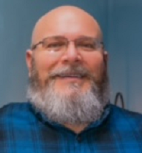

To mitigate the risk of a COVID-19 infection occurring at one of Waubonsie’s sites, we've implemented increased cleaning/hygiene measures throughout our facilities and have vastly expanded our telehealth offerings to offer services to clients from the comfort and safety of their own homes. Go to Frequently Asked Questions to know more about our mitigations.
About Us
Waubonsie Mental Health Center strives to empower people to achieve their hopes, dreams, and quality of life goals by delivering quality, integrated, trauma-informed behavioral health care.
Waubonsie Mental Health Center opened in 1982, and became an accredited Community Mental Health Center in 1984. Since that time, we have seen incredible growth within our organization- as well as in the people we serve!
WMHC offers a comprehensive set of services, ranging from outpatient therapy to drop-in peer support services. We currently have offices in Clarinda, Red Oak, and Shenandoah, Iowa.
The Center does not discriminate in regard to race, color, creed, national origin, sex, religion, age, sexual orientation, physical disability, or mental disability in providing services in any of our programs.
Our People
SUSAN ECKER, LISW
Susan has been providing counseling support to children, adolescents, adults and families in southwest Iowa since 2003. She earned her Master of Social Work degree from University of Missouri in 2002. Susan has a passion for working with adults that are experiencing some form of loss or life transition to include divorce, chronic illness, conflictual relationships, and grief associated with death and dying.
For most of her practice, she has treated a full range of symptoms with cognitive-based approaches to include the practice of mindfulness. In 2019, Susan became a EMDR trained therapist. She is amazed, after all her years of practice as a therapist, in how utilization of the EMDR protocol rapidly produces reduction of symptoms and restoration of balance.
Susan was born and raised in northwest Missouri. She and her husband live on a farm in Missouri. Susan spends most of her time away from work outdoors, and has a deep love of nature. She enjoys spending time with friends and family, hiking, golfing, gardening, and watercolor painting. Susan holds a strong belief in mind body connection and practices yoga and meditation.
AMBER BUTT, NCC, LMHC, CADC
Amber grew up near Kansas City, MO. She attended Northwest Missouri State University earning a Bachelor’s Degree in Psychology and a Master’s Degree in Counseling Psychology. She moved to Southwest Iowa after meeting her husband while working with adolescents in residential treatment. She earned her CADC (Certified Alcohol and Drug Counselor) in 2006 and her LMHC (Licensed Mental Health Counselor) in 2008.
Amber's passion is working with tweens, teens, and adults who have experienced trauma. She became an EMDR (Eye Movement Desensitization and Reprocessing) Certified Therapist in 2020 and is also certified in TF-CBT (Trauma Focused Cognitive Behavioral Therapy).
When Amber's not working, she loves spending time with her family, walking and playing with her newest family member—Remy the black lab, and watching her boys’ many sporting events.
JASON SWAIN, TLMHC, NCC
Jason Swain was raised in Del Rio, Texas. He left Del Rio at the age of 19 to explore the world while serving his country. Jason served in the US Army for 21 years. His time in the Army included tours of duty in Germany, Italy, Iraq, Macedonia, Kuwait, the United Kingdom, as well as stateside assignments in Arizona, Florida, New York, South Carolina, and Texas. He retired from the Army in 2012 and settled in Omaha, NE. His experience as an Army First Sergeant is what lead him to become a mental health counselor.
Jason completed a master’s degree in Clinical Mental Health Counseling from Bellevue University in February 2020. He is a National Certified Counselor (NCC) and holds a temporary Mental Health Counselor License in the state of Iowa. Jason has been working as a mental health counselor in Southwest Iowa for a year.
He takes a page from Alfred Adler’s individual psychology to gain a holistic view of the person and their circumstance. He looks forward to working with clients using aspects of Cognitive Behavioral Therapy, EMDR, Brief Solution Focused therapy, and Adlerian principles to help clients achieve goals and improve their situations during life’s challenges.
Jason works with individuals who have experienced trauma, depression, anxiety, and other mental health challenges.
KEVIN ROBERTSON, LMHC
Kevin is a Licensed Mental Health Counselor in both Missouri and Iowa. He enjoys the variety of working with all age groups. Kevin is trained in Trauma Focused Cognitive Behavioral Therapy (TFCBT), Eye Movement Desensitization and Reprocessing (EMDR), and Neurofeedback.
Kevin believes that everyone should have a safe and healing place to work through life’s difficulties. His therapeutic approach consists of providing support and counseling in helping clients effectively address personal life challenges. He combines traditional complementary methodologies and current neurological research to offer a highly personalized approached tailored to each client.
Kevin is committed to assisting each individual build on their existing strength to live their best possible life.
CAROLINE OBERMILLER, LPC
Caroline grew up in West Wales and moved to US after marrying her husband. One of the first things people often comment on is her accent. Caroline attended Missouri Baptist University in St Louis for both her bachelor’s and master’s degrees.
As a Registered Play Therapist, Caroline believes strongly in the power of play and the healing properties it offers. Play is the language of childhood and through play we support growth, strength, and individuality throughout all phases of our life. Utilizing play therapy with EMDR allows for a unique opportunity for therapy to be tailored to meet the needs of each client she meets.
Caroline approaches therapy with humor, positivity, and a belief that each of us has unlimited potential. One of her favorite phrases is “there are no wrong answers in here.” Caroline will walk alongside each client and meet them wherever they are at in their journey.
In her spare time, Caroline loves to travel, read, take trainings and spend time on her front porch. She currently has two cats, one dog, three children and a husband who often shakes his head in wonder at her ideas. Time with family and friends is always a priority to her.
STEPHANIE GRAY, ARNP, FNP, PMHNP
I earned a bachelor’s degree in Nursing from Nebraska Methodist College in 1996. I then earned a master’s degree in the Family Practice Nurse Practitioner program from Creighton University in 2004. I went on from there to earn a post-master’s certificate in Psychiatry from Creighton University in 2006.
I have extensive experience in the Emergency Department delivering medical care as well as Psychiatric care. I have practiced in close to every level of psychiatric care available which brings a seasoned and well-rounded view into my practice abilities. I have a very special interest in Individuals with intellectual disabilities and co-morbid psychiatric illnesses.
I enjoy the autonomy that my dual licensures provide for me. However, I am also a collaborator with many other disciplines, as they say, “it takes a village”.
Although, I have carried these advanced degrees for an extended period of time, I am a nurse and love to teach students at all levels….Empower those that are our future!
DENISE CROSSON, PHD, FNP
Denise D. Crosson, Ph.D. has been a nurse for thirty-eight years, a nurse practitioner for twenty-one years, and a nurse researcher for sixteen years. Her first job working with children was in high school as a lifeguard and swim instructor at the YMCA.
Throughout her nursing career Crosson has worked with children and their families in hospital, home, hospice, and community-based settings.
Denise earned a masters and doctoral degree from Virginia Commonwealth University where she was a fellow in the VA-LEND neurodevelopmental disabilities training program, which focused on children and families. Her dissertation research focused on short- and long-term effects of preterm birth on childhood development.
Denise has been a provider at WMHC since August 2017. She provides telehealth services in Clarinda, Red Oak, and Villisca.